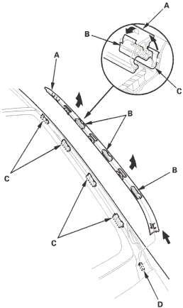
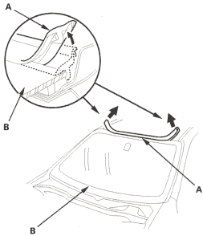

NOTE:
- Put on gloves to protect your hands.
- Wear eye protection when removing the glass with piano wire.
- Use seat covers to avoid damaging the seat.
- Use glass adhesive set P/N. 08C73-X0230N.
- Remove these items, refer to the '01 Civic Shop Manual on this CD:
- Pull up the side trim (A) to release the clips (B) from the retainers (C) and pull the trim rearward to release it from the clip (D) then remove the trim from each side of the windshield.

- Remove the cowl covers, refer to the '01 Civic Shop Manual on this CD (see page 20-252).
- Remove the moulding (A) from the upper edge of the windshield (B). If necessary, cut the moulding with a utility knife.

- If the old windshield is to be reinstalled, make alignment marks across the glass and body with a grease pencil.
- Pull down the front portion of the headliner (see page 20-33). Take care not to bend the headliner excessively or you may crease or break it.
- Apply protective tape along the edge of the dashboard and body. Using an awl, make a hole through the rubber dam, adhesive and dashboard seal from inside the vehicle at the corner portion of the windshield. Push a piece of piano wire through the hole and wrap each end around a piece of wood.